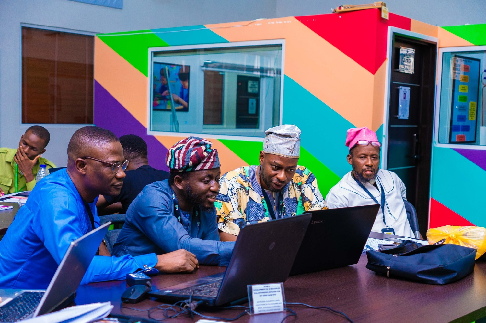
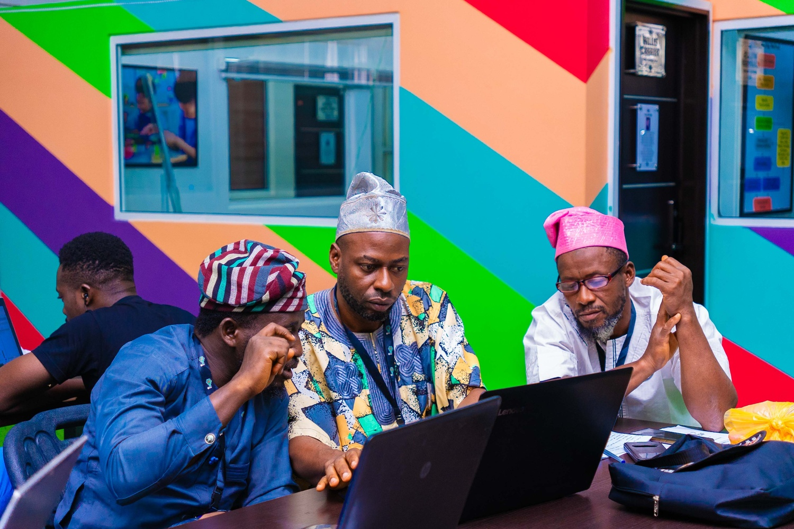
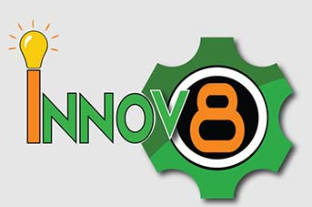
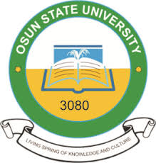

At FARMEASY, our journey has been one of innovation, collaboration, and growth. From initial ideation to prototyping and market testing, we've gained invaluable insights that shape our approach to revolutionizing agriculture in Nigeria.

Our journey continues as we expand our impact, driven by a commitment to innovation and community.

FARMEASY has been supported by key partners who share our vision for transforming agriculture in Nigeria. We collaborate with institutions and organizations to drive innovation and provide resources for our projects.

